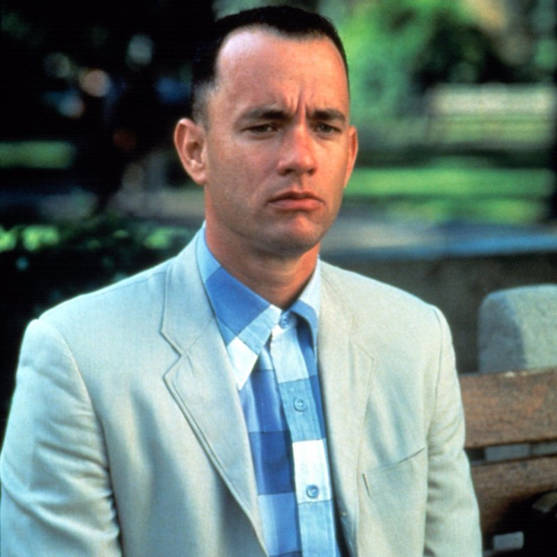
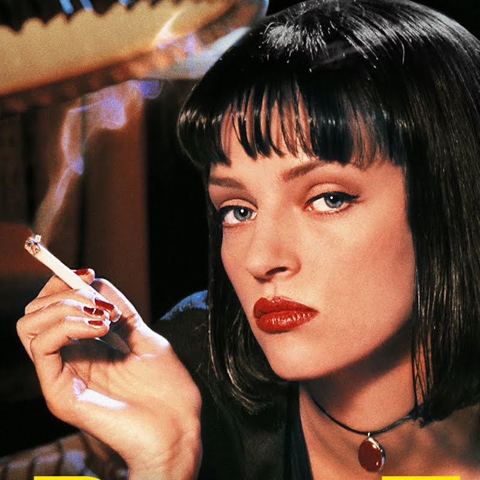

Clement Bonnemaire
Student at Lewagon
I have been working for the last 10 years in the Construction Industry, including the last 6 years in Singapore. I enrolled to Le Wagon to get new technical skills that will help me to create my own products.
Learn more...My favorite Movies
|  |
Forrest GumpForrest Gump est une comédie dramatique américaine réalisée par Robert Zemeckis, sortie en 1994. Il s’agit de l’adaptation du roman éponyme de Winston Groom |
|  |
Pulp FictionPulp Fiction, ou Fiction pulpeuse au Québec, est un film de gangsters américain réalisé par Quentin Tarantino et sorti en 1994. Le scénario est co-écrit par Tarantino et Roger Avary |
LionLion est un film américano-britannico-australien réalisé par Garth Davis, sorti en 2016. Il s'agit de l'adaptation cinématographique du roman Je voulais retrouver ma mère de Saroo Brierley. Le film est basé sur une histoire vraie |
About this page
This page is the fist page I created during Lewagon